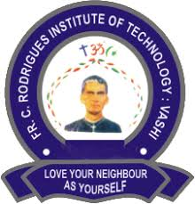
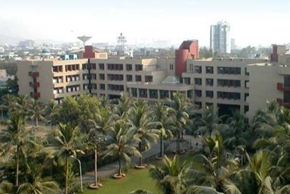

Discover Your Potential at Fr. C. R. Institute of Technology

Fr. C. R. Institute of Technology is a leading institution dedicated to providing quality education and fostering personal growth. Our diverse programs and vibrant campus life offer students the perfect environment to learn, grow, and succeed.
Why Choose Fr. C. R. Institute of Technology?
- Exceptional faculty and state-of-the-art facilities
- Wide range of academic programs
- Vibrant student community and extracurricular activities
- Beautiful campus located in the heart of the city
